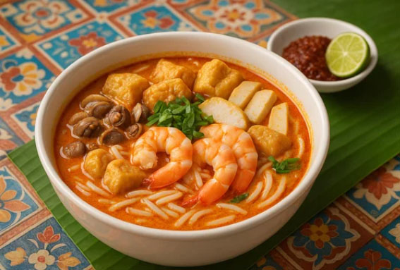
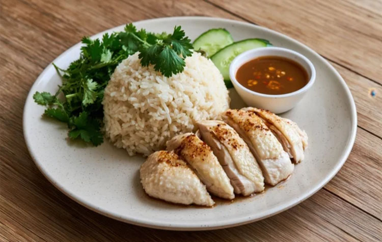

Timeless Symbols of Innovation
Singapore: A Journey through the architectural marvels and heritage sites that form the soul of Singapore's cosmopolitan identity.
A global hub for innovation, culture, and sustainable urban living. Discover the heart of Southeast Asia.
Where Dreams Take Flight
Iconic Landmarks
Explore the endless possibilities of our vibrant city-state where dreams are reimagined every day.

Merlion Park
The Merlion, with a lion's head and a fish's body, stands as a symbol of Singapore's humble beginnings as a fishing village and its original name, Singapura. This waterfront park offers unparalleled views across the bay, especially during the nightly light shows.

Marina Bay Sands
An futuristic horticultural park home to the Supertrees. An integrated resort fronting Marina Bay, iconic for its cantilevered rooftop SkyPark and infinity pool that defines the city's skyline.

Gardens by the Bay
A futuristic horticultural sanctuary where giant Supertrees and high-tech conservatories blend nature with innovation. This award-winning park offers a breathtaking escape from the urban heat, showcasing thousands of plant species. As night falls, the gardens transform into a luminous wonderland, defining Singapore’s modern garden city vision.

Cloud Forest
Walk through the clouds in the world's tallest indoor waterfall.

Botanic Gardens
A 160-year-old tropical garden in the heart of the city. UNESCO SITE

Sentosa
Singapore's premier island resort getaway, home to pristine beaches, world-class theme parks, and award-winning dining experiences.
Crossroads of Spice & Street Flavors
From fragrant noodle soups and chili-crab feasts to kaya toast and hawker classics, Singapore’s cuisine reflects a vibrant fusion of Chinese, Malay, Indian, and global culinary traditions.

Singapore Laksa
A rich coconut curry noodle soup layered with seafood, spices, and Southeast Asian flavors.

Hainanese Chicken Ricea(海南鶏飯)
Tender poached chicken served with fragrant rice, chili sauce, and clear soup — Singapore’s iconic comfort food.
Kaya Toast
Crispy toasted bread filled with sweet coconut kaya jam and butter, a beloved Singaporean café classic.
シンガポール共和国の歴史
Harbor of Empires & Global Exchange
From a modest trading port to a British colonial hub and modern global city-state, Singapore’s history is shaped by migration, commerce, resilience, and cultural fusion across centuries.
古代
テマセク（Temasek）（3世紀～14世紀）
中国の文献に「Pu-luo-chung（半島の先端にある島）」として記録され、交易拠点として知られていました。 シュリーヴィジャヤ王国（7世紀～13世紀）の影響下にあり、漁村や交易地として発展。
中世
シンガプーラ（Singapura）（14世紀）
サンスクリット語で「ライオンの町」を意味し、スマトラ島の王子サン・ニラ・ウタマによって名付けられたとされています。 マジャパヒト王国やアユタヤ王朝との争いの中で、重要な港として機能。
マラッカ王国（1402年～1511年）
シンガプーラはマラッカ王国の支配下に入り、交易拠点としての役割を果たしました。
ジョホール王国（1511年～1613年）
マラッカ王国滅亡後、ジョホール王国の一部となり、交易活動が続きました。
近世
ポルトガルの影響（16世紀）
ポルトガルがマラッカを支配し、シンガポール周辺にも影響を及ぼしました。
イギリス東インド会社（1819年～1824年）
トーマス・ラッフルズがシンガポールを自由港として開発し、イギリスの影響が強まりました。
海峡植民地（1826年～1942年）
シンガポールはペナン、マラッカとともにイギリスの海峡植民地の一部となり、貿易港として急速に発展。
シンガポールが「海峡植民地の首都」と認められていたのは、1832年から1946年の解体時まで（占領による中断を含む）となります。
近現代・現代
日本占領期 （1942年～1945年）
第二次世界大戦中、日本がシンガポールを占領し、「昭南島（しょうなんとう）」と改名しました。
イギリス直轄植民地 （1945年～1963年）
戦後、イギリスが再び統治を開始し、自治権を徐々に拡大。
マレーシア連邦（1963年～1965年）
シンガポールはマレーシア連邦に加盟しましたが、政治的・経済的な対立により分離。
シンガポール共和国（1965年～現在）
マレーシアより分離、シンガポール共和国として1965年に独立を果たし、現在は世界有数の経済国家として発展を続けています。
1945年〜1963年のシンガポールの歩み
1946年：直轄植民地としての独立
海峡植民地が解体され、シンガポールは単独の直轄植民地（Crown Colony）となりました。
1955年：一部自治の開始
「レンデル憲法」に基づき、初の民選政府が発足。完全ではありませんが、内政の一部で自治が始まりました。
1959年：自治領（State of Singapore）の発足
1959年6月、イギリスから外交と国防を除く完全な内部自治権を獲得し、「シンガポール自治州（自治領）」となりました。この際、リー・クアンユー（Lee Kuan Yew）が初代首相に就任しました。
1963年：マレーシア連邦への参加（イギリスからの離脱・植民地支配の終わり）
1963年9月16日、マラヤ連邦、サバ、サラワクと共に「マレーシア連邦」を形成
この時点で「イギリス領」ではなくなりましたが、あくまで「マレーシアという国の一部」になったため、シンガポール単独での外交権や国防権はありませんでした。
1965年：「国家としての完全独立（主権国家化）」（マレーシアからの分離独立）
1965年8月9日、マレーシア連邦政府との政治的・人種的な対立（「マレー人優先政策」をめぐる争いなど）により、シンガポールはマレーシアから追放される形で分離独立しました。 現在、シンガポールが「ナショナルデー（独立記念日）」として祝っているのは、1965年8月9日です。
アメリカ南北戦争という分裂の危機に立ち向かったエイブラハム・リンカーンとの共通点
国家の統一と平等への信念
リンカーンは、奴隷制という人種問題で引き裂かれたアメリカを、「人民の、人民による、人民のための政治」という民主主義と平等の理念で一つにまとめようとしました。
リー・クアンユーもまた、多民族が共生するために、マレー人特権ではなく「すべての市民の平等」を掲げて「マレーシア人のためのマレーシア」を実現しようと闘いました。
決断に伴う「悲劇」
リンカーンは、統一を維持するために凄惨な南北戦争を戦い抜かなければなりませんでした。
リー・クアンユーは、統一（マレーシア連邦への残留）を望みながらも、さらなる流血（人種暴動）を避けるために、あえて「国家の分離」という正反対の道を選ばざるを得ませんでした。結果として、シンガポールは「人口の約75%が華人」という極めて特殊な都市国家として独立することになりました。
法曹界出身の指導者
二人とも弁護士出身であり、論理的な思考と強いリーダーシップで未曾有の危機を乗り越えたという点も似ています。
リンカーンは「バラバラになりそうな国をつなぎ止めた」英雄ですが、リー・クアンユーは「つなぎ止めたかった国から放り出され、そこから世界一の都市国家を作り上げた」という、ある種「逆向きのリンカーン」のような劇的なドラマを持っています。
リー・クアンユーが独立時に流した涙は、「理想（統合）が潰えた悔しさ」と「これから資源もない小国を率いる責任感」が混ざり合ったものでした。
リー・クアンユーの哲学
彼は「シンガポールは、他国よりも優れていなければ生き残れない」という危機感を常に持っていました。その結果、わずか30年ほどで「第三世界から第一世界へ」と驚異的な飛躍を遂げたのです。